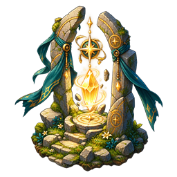

Se déplacer, découvrir les lieux et comprendre les renseignements disponibles.

Les règles de ce thème
- Position et proximité
- Vision, découverte et brouillard
- Discrétion et embuscades
- Rencontres et groupes autonomes
- Recherche et champs de bataille
- Cartes et parchemins réutilisables
- Disparition et annonce aux joueurs
- Rumeurs et découvertes du terrain
- Écoute payante et messages écrits
- Rechercher un trésor, un artefact ou un donjon à l’extérieur
- Préparer et faire partir une expédition exceptionnelle
- Tenter les sites et revenir avec le butin
- Un site fermé pour tous et des indices à archiver
Depuis le 1er novembre 2026, les trésors, artefacts et donjons sont placés uniquement hors de l’influence des lieux normaux. Toute cellule touchant leur portée normale est exclue du placement exceptionnel. Le parcours est unique : cartes de localisation, recherche extérieure avec la jauge, puis expédition de récupération (cette dernière reste à implémenter). Les lieux normaux fournissent toujours des indices, des rumeurs et des repères cartographiques.
Position et proximité
Voir un lieu sur la carte et être assez proche pour y agir sont deux conditions différentes. Les interactions utilisent votre position officielle et le rayon du lieu ou de la rencontre. Le zoom et l’inclinaison changent la vue, pas les distances de jeu.
Vision, découverte et brouillard
La classe, les pouvoirs et les règles de partie déterminent les renseignements accessibles. Un lieu à découvrir peut déjà exister sans être visible pour vous ; un lieu connu peut rester hors de portée d’interaction.
Les informations ennemies sont filtrées. Une bannière ou plusieurs silhouettes dessinées ne permettent pas de déduire les effectifs encore inconnus.
Discrétion et embuscades
L’immobilité et les capacités de discrétion peuvent réduire la signature détectable du héros. Reprendre le mouvement peut annuler une dissimulation. L’Éclaireur possède ses propres bonus. Cela ne garantit pas une invisibilité universelle face aux règles de détection et pouvoirs adverses.
Rencontres et groupes autonomes
Armées, éclaireurs, messagers, convois et expéditions peuvent agir dans le monde. Leur mission détermine leur activité ; leur image ne montre pas leur chargement ni leurs effectifs exacts.
Un groupe peut être ennemi, neutre ou allié. Une apparence de loup ou d’orc ne lui attribue pas à elle seule des statistiques animales ou un comportement de chasse. Consultez sa fiche et les interactions disponibles.
Recherche et champs de bataille
Un champ de bataille peut rester temporairement dans le monde. Une recherche à proximité peut révéler son site de butin. Connaître le site ne transfère pas automatiquement ses objets dans vos bagages.
Cartes et parchemins réutilisables
Les nouvelles parties génèrent une à trois cartes complémentaires par site exceptionnel. Les directions sont vérifiées sur les cases de la heatmap. Les lieux normaux servent de repères, sans héberger de site exceptionnel.
Les indices de localisation et de recherche ont un effet exclusif. Ces documents ne comptent pas dans la capacité de bagage et se lisent sans consommation et proviennent de stocks finis de loot, taverne ou académie. Les écoutes de rumeurs coûtent 5 or et peuvent remettre un message de recherche ou ne donner qu’une conversation sans importance. Les archives sont rachetées entre 5 et 10 or.
La vente ou la perte en combat d’un indice authentique actif comporte un risque de disparition de 25 %, une fois par site et événement. La disparition s’applique à tous les joueurs ; les objets conservés deviennent obsolètes. La recherche extérieure est disponible ; la récupération reste à raccorder.
Disparition et annonce aux joueurs
Tous les indices sont fiables : la règle des faux parchemins est retirée. La perte ou la vente d’un indice actif conserve son risque de disparition de 25 %.
Cinq minutes après une disparition, tous les joueurs reçoivent dans le journal un message : « Le trésor « X » a été découvert par un explorateur. » Le nom est adapté pour un artefact ou un donjon. Ni position ni identité de joueur ne sont révélées. La sauvegarde conserve l’échéance et les joueurs déconnectés retrouvent l’annonce à leur retour.
Rumeurs et découvertes du terrain
Le chef du lieu de référence explique gratuitement une carte active transportée. En taverne, « Écouter une rumeur » coûte 5 or et peut remettre un message de recherche ou donner une conversation sans importance. Les explications des cartes détenues sont gratuites. Le PNJ utilise le nom, l’anagramme, l’ancien nom ou la légende générés pour la carte. Il n’invente pas de fausse information et ne récite pas les fragments absents.
Les expéditions de prospection révèlent les gisements traversés et les sites exceptionnels extérieurs actifs. Les spécialistes transportés peuvent révéler les ressources naturelles : réglage configurable de 50 % pour le métier pertinent et 20 % pour les généralistes. Un seul essai par joueur, cellule et spécialité est mémorisé, même après sauvegarde.
Une découverte ne crée ni exploitation, ni production, ni équipement. Les cellules sous influence enregistrée restent neutralisées. Le journal affiche les connaissances du joueur ; les autres découvertes et les tirages restent privés.
Écoute payante et messages écrits
Une écoute de rumeur coûte 5 or. Le réglage initial configurable donne 25 % de chance d’obtenir un message de recherche si un indice reste disponible dans le stock de la taverne ; sinon, la conversation est sans importance. Aucune carte n’est nécessaire pour écouter et les rumeurs sans importance sont aussi payantes.
Un message utile est un item fiable et réutilisable qui aide à chercher sur place, sans indiquer la destination. Les explications des cartes déjà détenues sont gratuites. Les messages, papiers, parchemins et cartes restent consultables dans la section Documents, sans consommer de place de bagage.
Le serveur mémorise chaque écoute et son résultat. Rejouer une commande ne provoque ni second débit ni nouveau tirage. Les documents peuvent être reçus avec les bagages pleins, depuis une rumeur, un butin ou un transfert autorisé.
Rechercher un trésor, un artefact ou un donjon à l’extérieur
Le bouton « Chercher un trésor » ouvre une préparation sur la case officielle du héros. Dès l’ouverture acceptée, la recharge de 60 secondes et la discrétion réduite de 50 % commencent. Fermer ou annuler ne les supprime pas. Aucune ressource n’est consommée à l’ouverture.
Le barème validé donne +20 par indice de recherche correspondant (plafond 40), +10 par métier transporté sélectionné (plafond 30), bois et nourriture +1, bière +2, outil +5 (ressources plafonnées à 30). La jauge est plafonnée à 100 et donne une chance indicative de 90 % multiplié par jauge / 100 si un site actif est présent avec les bons indices.
Le serveur vérifie les moyens et la présence sur la même case puis consomme les quantités validées, même en cas d’échec. Les documents et spécialistes ne sont pas consommés. Une réussite révèle le site au joueur sans distribuer le butin. Aucun site exceptionnel n’est généré sous l’influence d’un lieu normal.
Les dates, la préparation et le résultat sont sauvegardés. Rejouer la validation ne provoque ni second débit ni nouveau tirage. La jauge proposée ne prouve pas la présence d’un site et les résultats aléatoires restent privés.
Préparer et faire partir une expédition exceptionnelle
Après une découverte, le bouton de préparation permet de choisir le site, les PNJ, soldats aptes, chevaux, outils et provisions réellement disponibles. Le serveur applique le barème commun : PNJ plafonnés à 30, volontaires à 20, montures à 10, matériel à 20 et provisions à 20.
Avec le héros, seuls ses bagages et son armée comptent ; le score baisse si les moyens sont perdus. Depuis un poste de prospection appartenant au joueur, les provisions sont retirées du stock et les soldats de la garnison au départ. Le héros doit être présent au poste. Un départ répété ne double ni les dépenses ni le groupe.
La préparation est annulable sans dépense. Les trajets, la résolution, le retour, les récompenses et les conséquences des donjons sont disponibles. Les commandes et leurs conséquences sont sauvegardées sans être rejouées.
Tenter les sites et revenir avec le butin
Le héros tente le site sur sa case ; un groupe envoyé le tente automatiquement à l’arrivée. Artefact : un équipement puissant. Trésor : 200/500/1 000 or et deux items. Donjon : 100/250/500 or, un item et 50/100/200 XP au héros présent et à chaque troupe participante survivante. Les valeurs suivent les difficultés 40/70/100.
La chance vaut au maximum 95 % : 70 % × score/cible pour les trésors et artefacts ; pour les donjons, le plus faible rapport entre expédition et puissance est retenu. Les moyens réellement présents sont recalculés ; un seul tirage résout la tentative.
Donjon réussi : dégâts de 10 % des PV maximum et +5 moral pendant cinq minutes ; échoué : 25 % et −10 moral pendant cinq minutes. Les dégâts sont arrondis au supérieur et touchent uniquement les participants. La puissance utilise l’attaque, la défense et les PV actuels du héros présent et des soldats engagés.
Une victoire ferme le site pour tous. Un échec le laisse actif. Le groupe revient avec ses survivants et moyens restants ; un surplus de stock reste en cargaison. Les items gagnés restent à retirer si les bagages sont pleins. Aucun rejeu ni reprise ne redonne les récompenses.
Un site fermé pour tous et des indices à archiver
La première victoire ou disparition clôture le site pour toute la partie. Les préparations concurrentes sont annulées immédiatement et les groupes en route sont rappelés, sans nouveau tirage ni dépense de provisions. Un groupe en combat attend la fin de son interruption avant de repartir.
Le vainqueur conserve son résultat et les items encore à retirer. Les indices actifs du site deviennent obsolètes sans supprimer les objets. Au cartographe, un indice de recherche ou une carte unique vaut 5 or, un fragment de paire 7 or et un fragment de trio 10 or. Une archive ne déclenche aucun nouveau risque et ne peut pas être payée deux fois.
Une disparition programme une seule annonce pour tous après cinq minutes ; une victoire ne produit pas cette annonce anonyme. Les commandes rejouées et les reprises ne réactivent pas le site et ne réattribuent ni récompense, ni dégâts, ni moral.